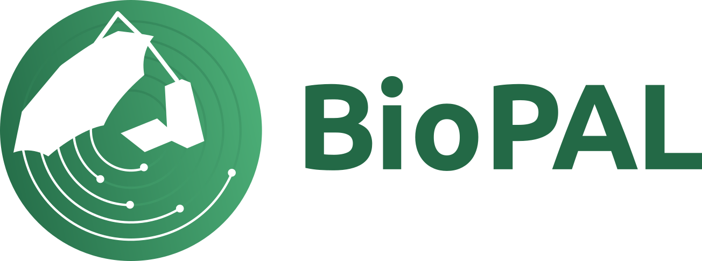
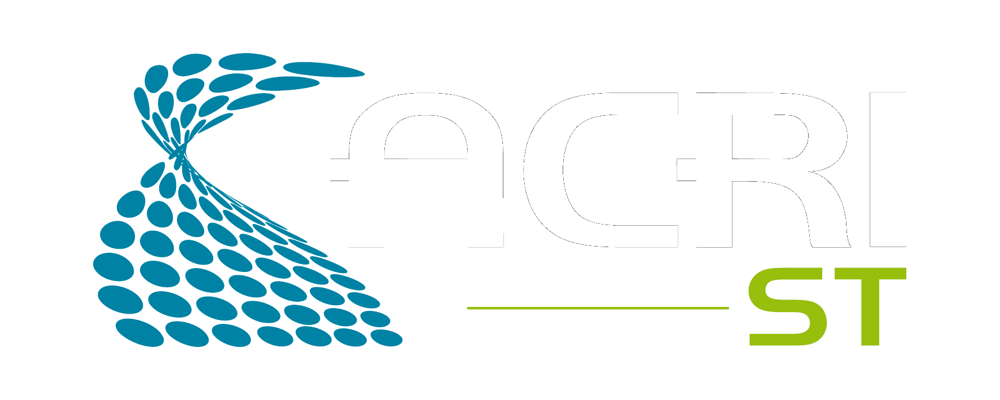

ESA · BioPAL · ESOC 2026
BIOMASS Hackathon
Live contribution board
Issues closed, PRs merged, and code churn by group — refreshed when an issue is closed or a PR is merged.
Auto-refresh on close / merge
Repo …
Updated …
Issues closed
—
all closed issues
Issues open
—
all open issues
PRs open
—
including drafts
By group
| Group | Issues closed | Issues open | PRs merged | + / − (merged PRs) | Activity |